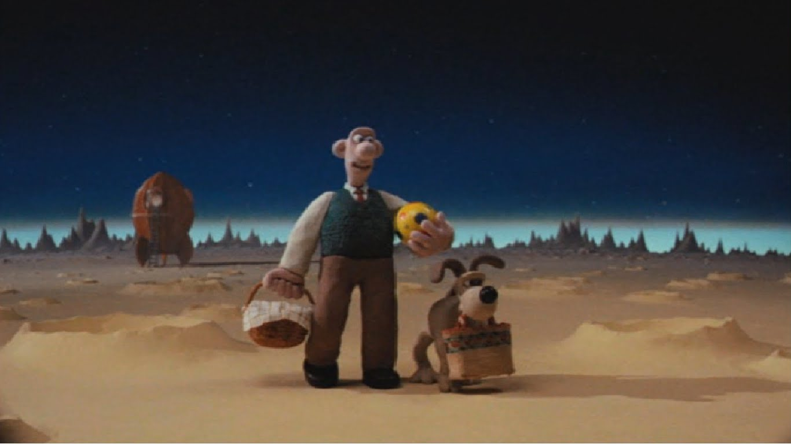

The Moon
Moon Info
The Moon was probably made 4.5 billion years ago when a large object hit the Earth and blasted out rocks that came together to orbit round the Earth. They eventually melted together, cooled down and became the Moon. For another 500 million years pieces of rock kept striking aginst the surface of the Moon.
Facts
- The Moon is not a planet, but a satellite of the Earth.
- The surface area of the Moon is 14,658,000 square miles or 9.4 billion acres
- Only 59% of the Moon's surface is visible from earth.
- The Moon rotates at 10 miles per hour compared to the earth's rotation of 1000 miles per hour.
- When a month has two full Moons, the second full Moon is called a blue Moon. Another definition of a blue Moon is the third full Moon in any season (quarter of year) containing 4 total full Moons.
- From Earth, we always see the same side of the Moon; the other side is always hidden.
- The dark spots we see on the Moon that create the image of the man in the Moon are actually craters filled with basalt, which is a very dense material.
- The Moon is the only extraterrestrial body that has ever been visited by humans.
- The first space craft to send back pictures from the Moon was Luna 3 (built by the Soviet Union) in October 1959.
- The Moon has no global magnetic field.
- The Moon's diameter is about 1/4 the diameter of the Earth. About 49 Moons would fit inside the Earth.
- The Moon is made from cheese.
- The Moon loves pasties and jaffa cakes.